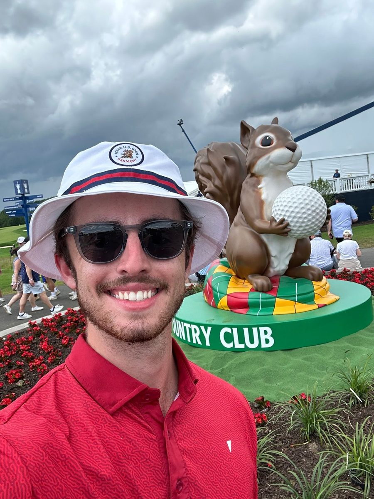

I'm Blake. I write about rebuilding — from the middle of it.

I'm 23, I live in Michigan, and I work in IT. Every week I publish an honest essay on discipline, letting go and starting over — pulled straight from my own life, written while I'm still in it, not after.
I'm writing my first book, Aligned: Lead with Love, Live with Intention — a field guide for rebuilding after heartbreak. The opening chapter is free.
I also built My JRNL, a simple journaling and habits app, because journaling is the daily habit that kept me steady.
Where this is going: I want to speak to teams, schools and groups about the stuff people only say out loud at 2am — pressure, overthinking, heartbreak, and how you actually rebuild. If you want to talk, write to me.
Side projects
What I've built

Stay up to date in your inbox
New essays and chapters from Aligned, straight to your inbox. Free, no spam.
You'll confirm on Substack. Free, and you can unsubscribe any time.